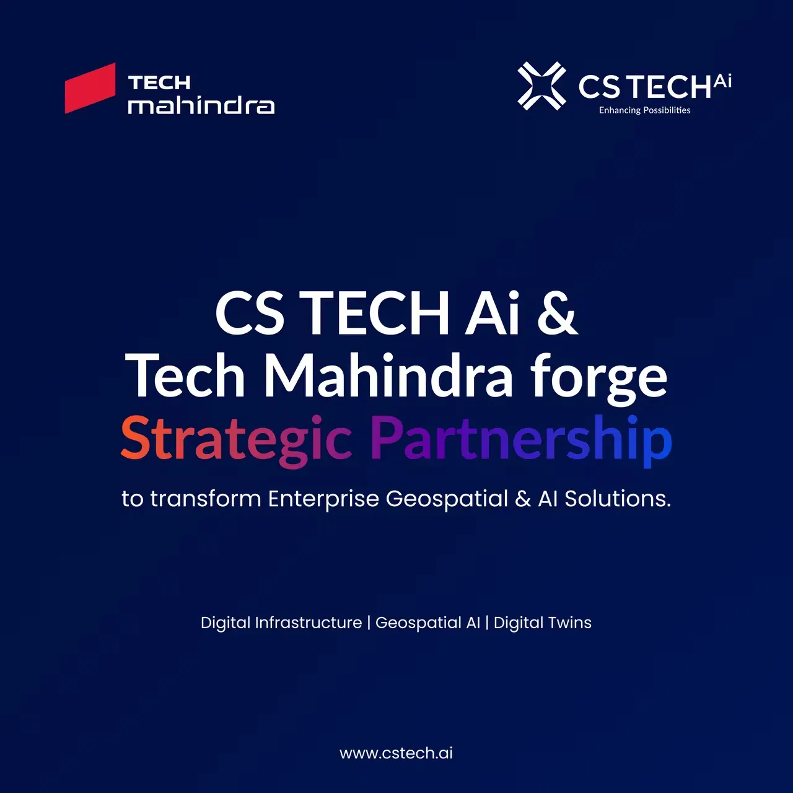

All India – January 27th, 2026: Tech Mahindra (NSE: TECHM), a leading global provider of technology consulting and digital solutions to enterprises across industries, announced a partnership with CS TECH Ai (BSE: Ceinsys Tech Limited) to jointly deliver next-generation geospatial, AI-driven, and digital-twin solutions for enterprises and public-sector organizations across global markets. The joint offerings are designed to help organizations improve operational efficiency, enable predictive maintenance, reduce downtime, and modernize legacy systems.
The partnership combines Tech Mahindra’s global digital delivery capabilities and enterprise-scale platforms with CS TECH Ai’s engineering-grade geospatial intelligence, Building Information Modelling (BIM) capabilities, and high-accuracy digital twin solutions. Together, the organizations will build integrated, data-driven platforms that enhance infrastructure planning, execution, monitoring, regulatory compliance, and long-term asset management. The partnership also includes plans to jointly pursue international (excluding India) growth opportunities, with a focus on markets where governments and enterprises are accelerating investments in Digital Public Infrastructure (DPI), smart mobility, utilities, and grid modernization.
Birendra Sen, President – Business Process Services, Tech Mahindra, said, “Globally, infrastructure modernization is challenged by aging assets, fragmented data systems, and rising geopolitical and climate risks. Enterprises and governments are therefore seeking integrated, digital-first approaches that align with emerging priorities such as digital twins, smart cities, and intelligent asset ecosystems. By integrating Tech Mahindra’s enterprise-wide digital transformation frameworks with CS TECH Ai’s engineering-grade geospatial capabilities, the partnership delivers powerful, scalable, and integrated solutions.”
The partnership is expected to accelerate go-to-market timelines through co-innovation, joint solution development, and proof-of-concept initiatives. This includes participation in large, multi-technology programs that combine geospatial intelligence, engineering data, and advanced analytics. Particularly in regions, including the Middle East, Europe, Asia-Pacific, and North America that prioritize smart infrastructure, digital public infrastructure, and data-led operations.
Sagar Meghe, Chairman & Whole Time Director, CS TECH Ai, said, “Many regions are accelerating digital infrastructure programs. This partnership gives us the platform to jointly deliver powerful, scalable, and integrated solutions to meet that demand.”
The partnership will further strengthen Tech Mahindra’s end-to-end geospatial services, that leverages AI/ML where applicable, to create advanced workflows to ensure high-precision data acquisition and processing. It will also empower organizations to visualize geospatial intelligence, conduct in-depth analysis, and generate actionable reports. Tech Mahindra and CS TECH Ai outline plan for co-developing new platforms, jointly pursuing large-scale opportunities, and building end-to-end systems that seamlessly fuse geospatial content with enterprise workflows across public and private sectors.
About CS TECH Ai
CS TECH Ai (BSE: Ceinsys Tech Ltd), a CMMI Level 5 company, operates at the intersection of core Engineering + AI, Geospatial Intelligence, and Mobility. Established in 1998, we are a technology-driven enterprise delivering high-impact solutions across Geospatial, Engineering, Mobility, and Emerging Technologies.
With a growing focus on Artificial Intelligence and Digital Transformation, CS TECH Ai empowers global clients by combining deep domain expertise with scalable, future-ready platforms.
Our certifications – ISO 9001:2015, ISO 14001:2015, ISO 45001:2018, ISO/IEC 20000-1:2018, and ISO/IEC 27001:2022 – reflect our unwavering commitment to quality, environmental management, occupational health & safety, IT service excellence, and information security.
About Tech Mahindra
Tech Mahindra (NSE: TECHM) offers technology consulting and digital solutions to global enterprises across industries, enabling transformative scale at unparalleled speed. With 152,000+ professionals across 90+ countries helping 1100+ clients, Tech Mahindra provides a full spectrum of services including consulting, information technology, enterprise applications, business process services, engineering services, network services, customer experience & design, AI & analytics, and cloud & infrastructure services. It is the first Indian company in the world to have been awarded the Sustainable Markets Initiative’s Terra Carta Seal, which recognizes global companies that are actively leading the charge to create a climate and nature-positive future. Tech Mahindra is part of the Mahindra Group, founded in 1945, one of the largest and most admired multinational federation of companies. For more information on how TechM can partner with you to meet your Scale at Speed™ imperatives, please visit https://www.techmahindra.com/.